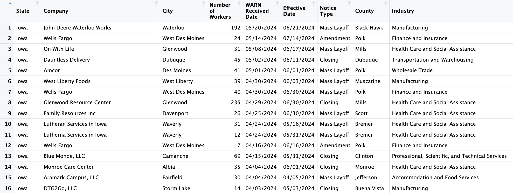

# import pandas as pd
# areas_df = pd.read_csv("Data/Updated_FEMA_Disaster_Areas.csv")
# areas_dfDataCamp Training
We are using R as our main programming language for complicated data analysis steps, so we have completed courses in terms of data manipulation, visualization, exploration and data processing.
Even though our project deals with much more complicated datasets and those courses may not be sufficient for all data analysis procedures, they are essential fundamentals for us to move on effectively.
Community Capitals Project Introduction
What is a Community and what is a Capital?
Community: A healthy community has all three below
Geography Based(cities, counties, neighborhoods)
Organized Based(school, work)
Identity Based(Hometown, vacation home)
Capital: An asset that is “invested” to create resources.
Types of Community Capitals
Natural Capital - The quality and quantity of natural and environmental resources existing in a community.
Cultural Capital - The values, norms, beliefs and traditions that people inherit from the family, school and community. Also includes material goods produced at a specific time and place (such as paintings, books) that have historical or cultural significance.
Human Capital - Attributes of individuals that provide them with the ability to earn a living, strengthen community, and otherwise contribute to community organizations, to their families, and to self- improvement (Flora et al. 2004). It includes access to education and knowledge development, training and skill building activities and efforts to build and expand local leadership.
Social Capital - Connections existing among people and organizations that help make things happen in the community. Includes close ties that build community cohesion (bonding) as well as weaker ties with local and outside people and organizations that help promote broad-based action on key matters (bridging).
Political Capital - The ability to influence and enforce rules, regulations, and standards. Access to individuals and groups with the power to influence decisions. Participating in civic discourse on difficult public issues.
Financial Capital - The variety of financial resources available to invest in local projects or economic development initiatives. Efforts to build wealth to support community development activities.
Built Capital - Represents the infrastructure of the community – the basic set of facilities, services and physical structures needed by a community.
Project Goal
Currently, we are seeking measurements that might influence these forms of capital and reliable data sources for them. For example, a measurement could be the number of businesses per county, which could significantly impact financial capital.
Previous projects have identified numerous measures for capitals such as Built, Financial, and Natural, but have found limited measures for Social and Cultural capital. This is because social and cultural aspects are challenging to quantify and collect data on, unlike Financial capital, which is inherently numerical.
Goal in the future, gather diverse measurements and data sets for each type of capital, we aim to develop an index value representing each capital for each county in Iowa to visualize.
Events Database
FEMA Dataset
The Federal Management Agency(FEMA) disasters dataset includes various disasters/events that have taken place throughout the United States over the years. These datasets also include all the grants and funding approved by various organizations.
Area Dataset
Area Dataset Feature Selection:
- id: Not needed
- disasterNumber: Might be important, will keep it for now.
- programTypeCode: Redundant, this info is available in programTypeDescription
- programTypeDescription: Will keep
- stateCode: Will either keep this or stateName but will drop one of them
- stateNames: Same as stateCode
- placeCode: Keep for now
- placeName: Most seems to be based on county but need to get rid of the ‘(county)’ part.
- designatedDate: Convert to Date type and clean up
- entryDate: Convert to Date type and clean up
- updateDate: Convert to Date type and clean up
- closeoutDate: Convert to Date type and clean up
- hash: not needed
- lastRefresh: Not important
Amounts & Declarations Dataset
Similar feature selection process was applied to these datasets as well.
Amounts Dataset
# import pandas as pd
# amounts_df = pd.read_csv("Data/FEMA_Disaster_Amounts.csv")
# amounts_dfDeclarations Dataset
# dec_df = pd.read_csv("Data/FEMA_Disaster_Declarations.csv")#Dropping mostly dates, state and county code which are available in the Areas dataset
# decColumnsToDrop = dec_df.columns[[0,2,3,4,5,7,12,13,14,16,17,20,21,22,23,24]]
# dec_df = dec_df.drop(columns=decColumnsToDrop)
# dec_dfGoal next week:
Since all three datasets include the column ‘districtNumber’ that match with each other, I plan to join these datasets into a new datasets which will follow a similar format.
Employment Shocks
We will be working with the Employment Shocks Data. The data is from workforce iowa.gov and LayoffData.com. The purpose of looking at employment shocks can help explain a communities well being. For example in the Tyson Food plants closure in Parry, Iowa will have a huge impact on it’s community. 1,276 people will be losing their job. As we started to look the datasets we found that there are three different notice types: Amendment, Mass Layoff, Closing, and Workforce reduction. we found that there were some miss spellings or slight character differences between the name of the companies and cities. Her next steps are to continue cleaning the data, fix the values so that they match up with each other, and start making visualizations.
# Read in the data set
WARN_2005_2024 <- read.csv("Data/WARN_2005_2024.csv")
# WARN_2005_2024$`WARN Received Date` <- as.POSIXct(WARN_2005_2024$`WARN Received Date`, format = "%m/%d/%Y")
# WARN_2005_2024$`Effective Date` <- as.POSIXct(WARN_2005_2024$`Effective Date`, format = "%m/%d/%Y")
# Variables
W05_24_V <- WARN_2005_2024[ ,-c(8,9,10,13)]# Unique values
sort(unique(WARN_2005_2024$`Company`))
sort(unique(WARN_2005_2024$`City`))
unique(WARN_2005_2024$`Notice Type`)
sort(unique(WARN_2005_2024$`County`))
Health
We believe that there are some indirect correlations between health facilities and social capitals, especially the establishments and closures of health facilities in some specific areas leading to changes in capitals.
That’s why we collect and analyse data sources regarding nursing homes. We have 3 datasets:
Nursing Homes from CMS, consisting of 100 columns and 14,860 observations
Iowa Medicaid Payments with 9 columns and 98,305 observations representing the Medicaid reports
Nursing Facility Closures includes data for facilities that closed in 2023
and 9 datasets for nursing homes from 2015 to 2022, which will be used to identify the facility closures.
Illustrations:
cms_nursinghome_df = read.csv("Data/CMS_Nursing_Homes.csv")
colnames(cms_nursinghome_df) <- gsub("\\.", " ", colnames(cms_nursinghome_df))
head(cms_nursinghome_df)medicaid_df = read.csv("Data/Iowa_Medicaid_Payments.csv")
colnames(medicaid_df) <- gsub("\\.", " ", colnames(medicaid_df))
colnames(medicaid_df)[colnames(medicaid_df) == "Vendor Name"] <- "Provider Name"
colnames(medicaid_df)[colnames(medicaid_df) == "Vendor Number"] <- "Provider Number"
head(medicaid_df)closure_df = readxl::read_excel("Data/Nursing_Facility_Closures.xlsx")
head(closure_df)First approach: We want to identify the opening and closing dates for each provider, so our first approach is to utilize the “Report Date” column in the medicaid dataset. Whenever a payment is made to a provider, a report will be recorded. So we first used the most recent report date and the oldest report date as estimates for the opening and closing dates, but…
medicaid_df_latest_filtered <- medicaid_df %>%
group_by(`Provider Name`) %>%
summarise(estimate_closing = max(`Report Date`))
medicaid_df_oldest_filtered <- medicaid_df %>%
group_by(`Provider Name`) %>%
summarise(estimate_opening = min(`Report Date`))
opening_closing_medicaid <- medicaid_df_latest_filtered %>%
full_join(medicaid_df_oldest_filtered, by = "Provider Name") %>%
select(`Provider Name`, `estimate_opening`, `estimate_closing`)
opening_closing_medicaidSecond approach: We collect 9 additional datasets regarding active providers from 2015 to 2022, and compare the consecutive years to estimate the year a provider closes. Illustrations are below:
So by looking at this planned dataframe, we can estimate the provider with ID 1506000 closed in 2018 and use that insight to identify the effect of the closure on the community.
Social & Cultural Capitals
Beginning
Throughout this week we have been brainstorming ways that we can measure Social and Cultural Capital. We read articles and looked at websites to gain knowledge on potential measures. As we started our research, we wrote down measure ideas along the way. We discussed some of our ideas and talked about our concerns of the project so far. Our biggest concern was finding cultural measures.
Social Capitals:
Cultural Capitals:
Findings
We found that it is much easier to think of social capitals compared to cultural capitals. The tricky part about Cultural Capitals is being able to find datasets for our measures. For example, a community could have a lot of cultural capital due to holding cultural events but there is very little or no data for us to look at.
Some of the sources that we have found so far are: